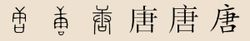

唐氏起源
唐（táng）姓，起源于中国，在《百家姓》中排名第64位。在日本、韩国、越南等国均有分布。在韩国主要分布在江原道，京畿道以及忠清南道。在日本主要分布在九州，本州一带。唐姓是当今中国姓氏排行第26位的大姓，人口众多，约占全国汉族人口的0.65%。唐姓足迹遍布中国大地。今日唐姓尤以四川、湖南、贵州、山东、安徽、广西等省区居多，上述6省唐姓约占全国汉族唐姓人口的60%。
基本介绍
唐[唐、啺，读音作táng(ㄊㄤˊ)]
姓氏源流
源流一
出自祁姓和姬姓，为黄帝轩辕氏之后。相传帝尧是黄帝轩辕氏的玄孙，姓伊祁，名放郧，尧是他的谥号。他最初被封于陶，后来迁于唐，所以被称为陶唐氏。成为天子后，开始以"唐"为国号，所以又称唐尧。尧做了100年天子后禅位给舜，尧死后，舜封他的儿子丹朱为唐（今山西省翼城县）侯。到周武王时，唐侯作乱被成王所灭，唐国之地就被改封给成王之弟唐叔虞，原来帝尧的后裔则被迁往杜国，称唐杜氏。唐杜氏的后裔有以国为氏的，称唐氏。另外唐叔虞的子孙也以国为氏，后来就姓了唐。同时周昭王时，曾封丹朱之后在鲁县为唐侯，被楚灭后，其子孙也姓唐。春秋时，又有一支姬姓唐诸侯国，被楚昭王灭后，其后人也称为唐氏。还有复姓唐山姓、北唐姓改为唐姓。以上这5支唐氏，均源自轩辕氏。
源流二
源于西南夷，出自东汉时期白狼王部族，属于汉化改姓为氏。据《后汉书·南蛮传》所载，汉代时南蛮白狼王为唐姓。古称白狼族、白狼夷，就是今天少数民族普米族的先民。普米族，自称培米、拍米、批米，普米语中“米”意为人，培、拍、批是一音之转，都是“白”的意思，即普米语的汉义为“白人”。普米族的他称较多，汉文史籍依其自称而写作“般木”或“白狼般木”，即白狼族人，称白狼夷。至晋朝时期，以他称而写作‘西蕃’，清朝以后称之为“西番”。在其周围的少数民族中，藏族、摩梭人称之为“巴”，彝族则称其为“俄祝”，纳西族称之为“博”。清朝时期撰著的《云南通志》、《维西见闻录》等史籍中，亦将普米称为“巴直”。普米族最初只有以上八大汉姓，其它普米族汉姓大多是后来才发展起来的，例如格母部落的汉姓已发展为郭、杨、马、董、烟、肖、龙、宋、项等等。
这四个普米族部落现今主要分布在木里盐源后所、右所、中所、宁蒗蒗蒗、永宁、宁蒗温泉、拉伯、西川、木底箐、翠玉、红桥、新营盘、战河、跑马坪、永胜、丽江、维西、宁蒗金绵、西川、新营盘、宁利等地。从整体看，大分散小聚居是普米族分布的一个特点。普米族大部分与其他民族杂居，使之形成了开朗。豁达、豪放的民族性格。
源流三
据《三国志·郭淮传》所载，陇西（今属甘肃）羌族中有唐姓。
源流四
源于回纥族，出自元朝时期大臣畏兀人唐仁祖，属于以先祖名字汉化为氏。据史籍《元史·唐仁祖传》中的记载，元朝时期，西域畏兀人中有唐仁祖。唐仁祖，字寿卿，畏兀人(回纥)，因其祖辈称唐古直氏，因此宋、元时期其子孙都以汉姓唐为氏。元成宗孛儿只斤·铁穆尔大德五年(辛丑，公元1301年)，唐仁祖授翰林学士承旨。在此期间，元成宗尊太母元妃为皇太后，由于唐仁祖精于书法，特诏令他书写册文，深得元成宗的器重。
唐仁祖逝世后，被追封为洹国公，赐谥号为“文贞”。在唐仁祖的后裔子孙中，皆以汉姓唐为氏。
源流五
源于蒙古族，出自，属于以部落名称汉化为氏。据史籍《清朝通志·氏族略·满洲八旗姓》记载：
⑴.蒙古族塔喇氏，人数庞大，世居讷殷（今吉林抚松松花江上游流域）。后有满族引为姓氏者，满语为Tara Hala，汉义“旷野”。清朝中叶以后多冠汉姓为白氏、唐氏、匡等。
⑵.蒙古族图罗鲁特氏，亦称佟尼果特氏，世居喀喇沁（今内蒙古赤峰喀喇沁旗）。后有满族引为姓氏者，满语为Tulolut Hala。清朝中叶以后多冠汉姓为唐。
源流六
源于满族，属于以部落名称汉化为氏。据史籍《清朝通典·氏族略·满洲八旗姓》记载：
⑴.满族他塔喇氏，亦称他塔拉氏、他他拉氏，满语为Tatara Hala，汉义“众多”，世居扎库木（今辽宁新宾伊勒登河西岸下营子）、安褚拉库（今俄罗斯滨海地区南部）、宁古塔（今黑龙江宁安）、扎克丹（今辽宁抚顺）、萨尔浒（今辽宁抚顺大伙房水库）、马察（今吉林浑江）、占河（今吉林双阳河流域）、乌苏（今吉林伊通）、伊兰木（今吉林市）、海州（今辽宁海城）、十方寺（今辽宁沈阳石佛寺）、吉林乌拉（今吉林永吉）以及长白山等地，清朝中叶以后多冠汉姓为唐氏、谭氏、舒氏。
⑵.满族泰瑚特氏，亦称唐乌勒特氏，满语为Taihut Hala，世居乌拉（今吉林永吉）。清朝中叶以后多冠汉姓为唐氏。
⑶.满族唐达氏，满语为Tangda Hala，世居科普沁（科普喀滩，今乌苏里江北岸）。清朝中叶以后多冠汉姓为唐氏、佟氏。
⑷.满族唐古氏，亦称汤务氏、陶古浑氏，源出金国时期女真唐括部，以部为氏，满语为Tanggu Hala，汉义“百”，世居哈达（今辽宁西丰小清河流域）、长白山等地，是满族最古老的姓氏之一。清朝中叶以后多冠汉姓为唐氏、陶氏。
⑸.满族唐佳氏，亦称汤佳氏，满语为Tanggiya Hala，祖先原为汉族，东汉末期被辽东鲜卑乌桓部虏携后融入鲜卑族，后逐渐演化为辽东女真，世居安褚拉库（今俄罗斯滨海地区）。清朝中叶以后多多冠汉姓为唐氏。
⑹.满族唐尼氏，满语为Tangni Hala，世居十方寺（今辽宁沈阳石佛寺）。清朝中叶以后多冠汉姓为唐氏。
⑺.满族唐颜氏，满语为Tangyan Hala，世居讷殷（今吉林抚松松花江上游流域）。清朝中叶以后多冠汉姓为唐氏。
源流七
源于土族，属于以部落名称汉化为氏。土族唐氏，源出土族拉什唐氏族部落，在清朝中叶多取部落名称中的谐音汉字“唐”为姓氏，世代相传至今。
源流八
源于藏族，出自民国初期西藏唐官，属于以官职称为为氏。民国初的北洋政府时期，在西藏地区设置了两大官吏体系，其中之一就是唐吉忒官，负责辅佐北洋政府管理西藏地区政务事宜，可以由任何普通人来担当，但必须通晓汉、藏两族语言，不论职位，统称唐吉忒官，简称唐官。其实，唐吉忒官的主要职责就是沟通汉族与藏族之间的语言与生活习俗，帮办一应杂务。在唐吉忒官及其后裔子孙中，就有以其官职称谓为汉姓者，称唐氏，世代相传至今。
源流九
源于其他少数民族，属于汉化为氏。今瑶族、苗族等少数民族中，均有唐氏族人分布，多为明、清时期，中央王朝在中南、西南地区实行改土归流运动中，被地方汉族最高行政长官赐予的汉姓，亦有汉族兵员驻守边疆时与各民族联姻后带入的汉姓。
得姓始祖
唐尧（伊祁放郧、姬放郧、帝尧）、唐叔虞（姬叔虞）、唐仁祖（唐古直·仁祖）
各支始祖
唐伯徵：驾前指挥，字远稽，号遂良，葬宁邑七都八区石都□□，而左□山午山子向，隶丁癸石墓碑记山禁员，后裔步亨及衡英竹筠三契据。元配：高氏，封安人，葬枫树山子山午向。子三：宝珍；珠；瑞。续配：谢氏，封安人，葬枫树山高安人莹同向石墓。子一：宝璌。是为善邑唐氏始祖。 唐 佑：字承裕，仕唐，任两广节度使，赐紫金鱼袋，诰授银青光禄大夫致仕，居道州鹅颈觜，继居衡州踏水桥，后迁于潭生没阙，谕葬于本邑淦田旧一百三都，今十六都十甲，地名金烟衡戌山，辰向有碑有志有图有传有墓田十二亩。元配：黄氏，诰授一品夫人，生没葬阙。生子三：唐潼，唐灒，唐汴。是为金田唐氏在城堂始祖。
唐宁雄：仁公长子，名刚行四，唐朝中和间任丰城令避乱归归隐路过唐溪见山水秀丽遂由米岭而迁归焉，公谋谟神断慷慨激烈正直自如既明且哲避地避地卒，创家业卒葬本都陇云山，按米岭古属筠州今隶奉新。元配：谌氏，五里人，卒葬与夫合墓。子二：进瞻；进稳。是为湖南浏阳唐氏始祖。
唐寿兴：丕谟之子，字松龄，号礼翁行敬四，公襟怀淡宕啸傲山水因念，祖训万邑可家遂契妻子而迁焉，其才猷经济道德文章真足垂裕后世绵远无穷迄今五百馀年。蕃衍湘赣历傅不朽者皆，公厚德之所致也，寿九十有八没葬江西万载城外涂陂真武形。元配：熊氏，没葬万载一都柞柱窝口虎形。继配：赵氏，没葬涂陂真武形与夫合墓。子二：虎，世居万邑；彪，迁居浏邑。是为湖南浏阳唐氏始祖。
唐世旻：唐朝永州刺史唐世旻（即仁泽尊王，历朝皇帝均有的敕封，北宋永州人民为祭祀他而建有唐公庙，南宋微宗帝敕赐“灵显神祠”匾额）由山西太原徙楚零陵，其子元本、其孙承裕，均居零陵南乡，厥后曾孙唐冕自北宋（977-997）年间，以家于东安之龙溪。冕生持（承信郎），持生信明，信明生泽（迪功郎），泽生干（县丞），干生三子一女，自本、自木、自介，一女适伍进士，自本生天定、自木生天成、自介生天申，天申生元瑛，其元克、元楚、元添、元升乃堂兄弟也，元瑛生淑清，淑贤不知谁之子，淑清生仁卿，济卿、寿卿、和卿乃叔伯之兄弟也。旧谱云：承裕公以后无考，天定以后，因宋元间遭世大乱，兵燹之害，无复考据，纵观东安唐氏各宗支，世旻公后裔各自将明甫、良甫、章甫、玉甫、荣甫、贤甫、东甫、德甫、吉甫、康甫、宗甫、世甫等奉为立籍始祖纂修族谱。从家世始祖冕公至今历时1033年，冕公派下至今38代，后代散居在各地，主要聚居县城的龙溪河、紫水河以及湘江河两岸村庄。